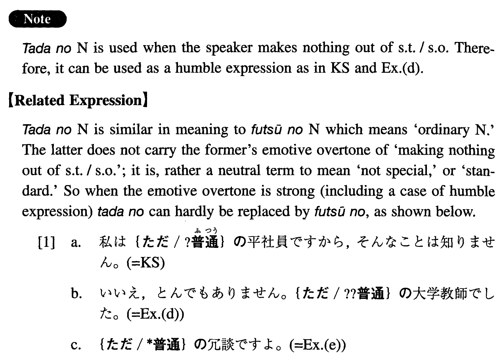

ただの (I. 449)
- (ks).
- 私はただの平社員ですから、そんなことは知りません。
- I'm only an ordinary employee, so I'm not aware of that.
- (a).
- ただの風邪だと思っていたら、肺炎だった。
- I thought it was an ordinary cold, but it was pneumonia.
- (b).
- あの人はただの学者ではないようですね。
- He doesn't appear to be an ordinary scholar, does he?
- (c).
- ただの集まりだと思って、顔を出したら、偉い人達が出席していたのでびっくりした。
- I put in an appearance because I thought it was an ordinary gathering, but to my surprise there were big shots attending.
- (d).
- A: お父様はお偉い方だったそうですね。B: いいえ、とんでもありません。ただの大学教師でした。
- A: I heard that your father was a great man. B: No, not at all. He was an ordinary college professor.
- (e).
- ただの冗談ですよ。
- I'm just kidding, you know.
